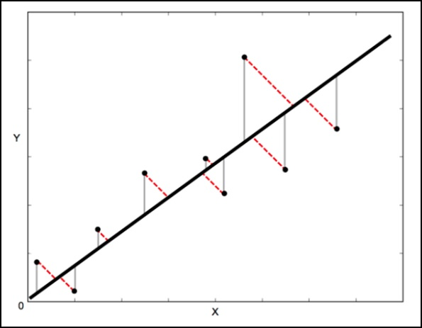

ODR代表正交距离回归，用于回归研究。 基本线性回归通常用于通过在图上绘制最佳拟合线来估计两个变量y和x之间的关系。
用于此的数学方法称为最小平方，旨在最小化每个点的平方误差总和。 这里的关键问题是如何计算每个点的误差(也称为残差)？
在一个标准的线性回归中，目的是从X值预测Y值 - 因此明智的做法是计算Y值的误差(如下图所示的灰线所示)。 但是，有时考虑X和Y的误差(如下图中的红色虚线所示)更为明智。
例如 - 当知道对X的测量是不确定的，或者当不想关注一个变量相对于另一个变量的错误时。

正交距离回归(ODR)是一种可以做到这一点的方法(正交在这里表示为垂直 - 所以它计算垂直于线的误差，而不仅仅是’垂直’)。
单变量回归的scipy.odr实现
以下示例演示单变量回归的scipy.odr实现。
%matplotlib inline
import numpy as np
import matplotlib.pyplot as plt
from scipy.odr import *
import random
# Initiate some data, giving some randomness using random.random().
x = np.array([0, 1, 2, 3, 4, 5])
y = np.array([i**2 + random.random() for i in x])
# Define a function (quadratic in our case) to fit the data with.
def linear_func(p, x):
m, c = p
return m*x + c
# Create a model for fitting.
linear_model = Model(linear_func)
# Create a RealData object using our initiated data from above.
data = RealData(x, y)
# Set up ODR with the model and data.
odr = ODR(data, linear_model, beta0=[0., 1.])
# Run the regression.
out = odr.run()
# Use the in-built pprint method to give us results.
out.pprint()